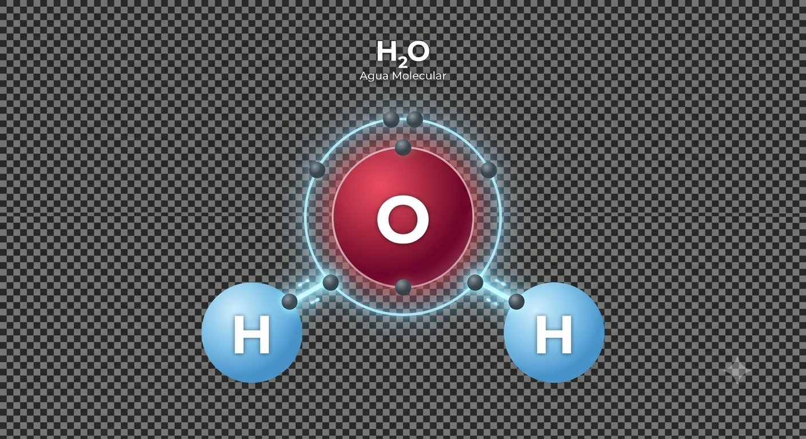
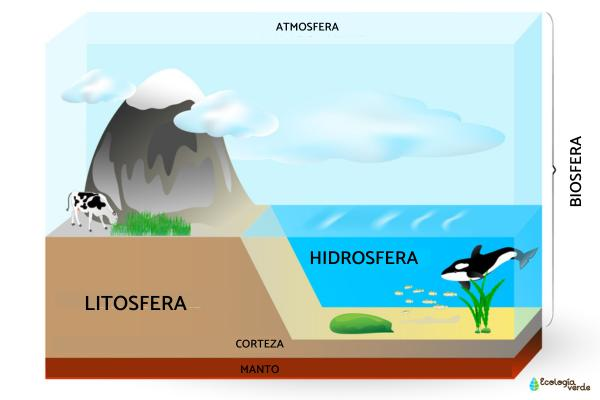
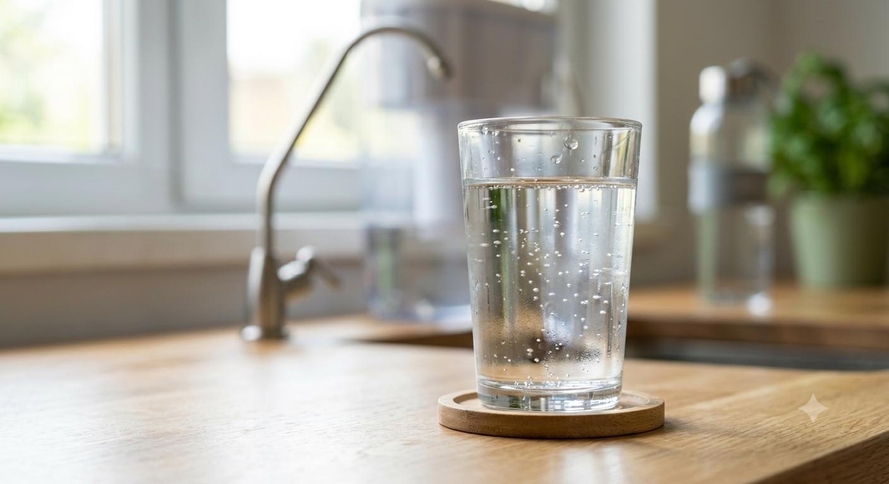
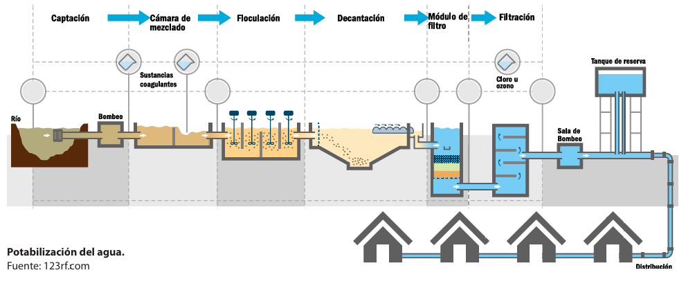

El agua es una sustancia esencial para la vida, compuesta por dos átomos de hidrógeno y uno de oxígeno (H₂O). Cubre alrededor del 71% de la superficie terrestre y se encuentra en estado líquido, sólido (hielo) y gaseoso (vapor).

Las aguas cubren cerca de dos terceras partes del planeta Tierra y participan de los diferentes procesos que incluyen las características climáticas, la distribución de la vida vegetal y animal y como elementos de modelación del relieve, siendo necesarias para el desarrollo de diversas actividades humanas.
Propiedades físicas: el agua se puede encontrar en tres estados: sólido, líquido y gaseoso. No tiene color, sabor, ni olor. Su punto de congelación es 0 ºC, y el de ebullición es 100 ºC. Tiene la capacidad de absorber calor antes de que suba su temperatura.
Propiedades químicas: tiene la capacidad de disolver más sustancias que cualquier otro líquido. El agua no es ni básica ni ácida, siendo su pH 7, que es neutro. Reacciona con los óxidos ácidos, óxidos básicos, metales y no metales.
El agua es multifacética, se derrama en ríos, corre por cataratas, revolotea en mares y océanos, se amontona en témpanos de hielo, con sus torrentes atraviesa las capas superficiales de la tierra, plantas y animales. Ella se encuentra en todas partes, en las rocas, plantas y animales, en la atmosfera. En la naturaleza, no siempre está distribuida proporcionalmente. En algunos lugares es tanta que provoca inundaciones, mientras que, en otros, su ausencia causa grandes sequías.
La falta de agua potable aumenta, no sólo por el crecimiento poblacional y el avance del desierto, sino también, la contaminación de las aguas naturales. En el desierto se sufre de sed, por la falta de montañas y bosques para que se produzcan lluvias, sin embargo por debajo corren ríos subterráneos con capacidad para darle agua a millones de personas.

Evaporación , cuando se convierte en vapor de agua y sube a la atmósfera; condensación, cuando se enfría y se concentra en partículas que forman las nubes y neblinas; precipitación, cuando cae a la superficie en forma de gotas, nieve o granizo; infiltración cuando una parte penetra al suelo y otra es aprovechada por los seres vivos; y escorrentía, cuando se desplaza en la superficie para llegar a ríos, lagos y océanos.

El conjunto de las aguas terrestres es conocido como hidrosfera y este subsistema del sistema terrestre interactúa con otros como la atmósfera, la litósfera, la biosfera y la antroposfera.

Es la alteración del agua por sustancias químicas, residuos o microorganismos que afectan su calidad y uso.
Vertidos industriales, aguas residuales domésticas, pesticidas agrícolas y desechos plásticos.
Cuando se habla de agua potable estamos refiriéndonos a un agua libre de elementos que representen un riesgo para la salud, tanto en las áreas microbiológica, físico-química y toxicológica. El agua potable debe ser inodora, incolora e insípida y libre de partículas en suspensión, que no excedan 5 NTU (Unidades Nefelométricas de Turbiedad), acorde con la Organización Mundial de la Salud (OMS).

El proceso de potabilización del agua pasa por los siguientes pasos:
Captación. En esta etapa el agua se extrae des de las fuentes naturales, generalmente de los ríos. ■ Canalización. El agua captada es conducida hacia la planta potabilizadora. ■ Coagulación o mezcla rápida. Proceso donde se aplican los químicos que neutralizan las car gas de los sólidos suspendidos en el agua. ■ Floculación. Proceso por el cual se unen las partículas en suspensión después de neutraliza das las cargas, formando los flóculos o aglome raciones de partículas, que al ser más pesados que cada partícula individual, se asienta, elimi nando la turbidez y clarificando el agua. ■ Decantación o sedimentación. Proceso me diante el cual el agua es colocada en un módulo de la planta potabilizadora llamado decantador o sedimentador, donde reduce su velocidad a tal nivel que se produzca la separación del lí quido y los sólidos. ■ Filtración. En esta fase el agua se hace pa sar por un medio poroso, generalmente arena, donde se eliminan partículas en suspensión, quedando el agua con un nivel de turbiedad dentro de normas establecidas por la Orga nización Panamericana de la Salud y los mi croorganismos que estuvieron presentes se eli minan en un 95 %. ■ Desinfección. Se eliminan los microorganis mos restantes utilizando diferentes productos químicos y se deja un residual, como protec ción de la calidad, dentro de normas estable cidas para que sea eliminado cualquier mi croorganismo que por alguna vía penetre a la tubería a través de la cual se conduce el agua a los hogares. ■ Distribución. Terminado el tratamiento de potabilización, el agua es conducida por una red de tuberías a los consumidores.

En el año 2014 en la ciudad de Flint, en el estado de Michigan, Estados Unidos, ocurrió un grave problema de contaminación del agua. El cambio del suministro de agua de la ciudad del lago Hu rón por el río Flint provocó a la contaminación por plomo creando un grave problema de salud pública. El agua del río Flint corroyó las tuberías viejas de agua y se mezcló con el suministro de agua que tenía un alto contenido de plomo. Debido a esto entre 6,000 y 12,000 niños presentaron elevados niveles de plomo en la sangre lo que repercutió de forma negativa en su salud.
Investigo cuáles son los materiales con los que se elaboran las tuberías para transportar el agua potable.
Investigo cuáles son los efectos del plomo en la sangre.